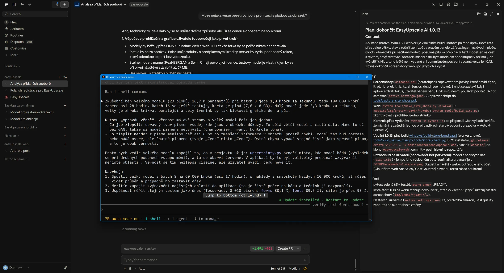
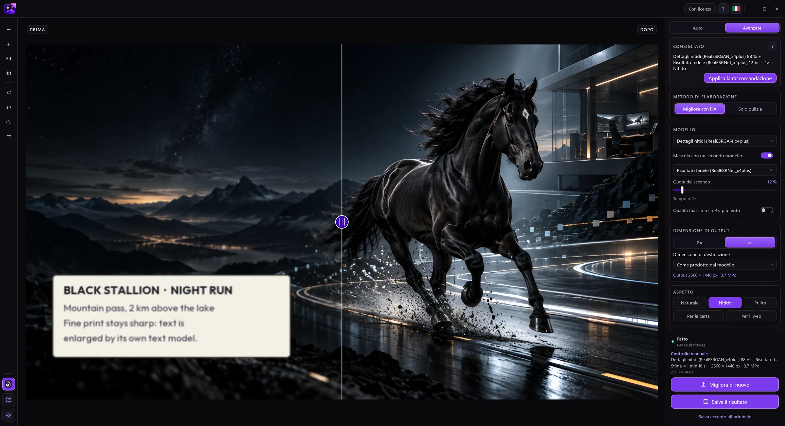
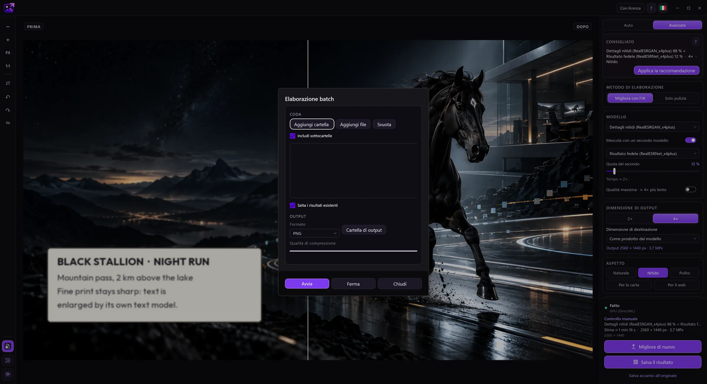
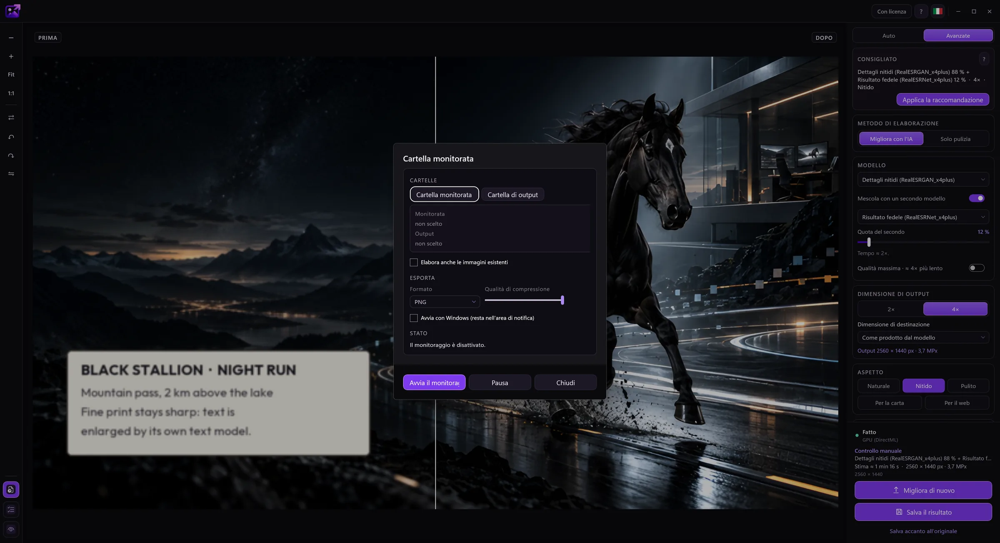

Modalità Auto
L’app riconosce l’immagine (foto, disegno, testo, scatto danneggiato) e sceglie modello e dimensioni. Le foto con rumore vengono prima ripulite e poi si aggiunge una grana fine, così il risultato non sembra dipinto.
EasyUpscale AI ingrandisce e migliora le immagini con l’IA direttamente sul tuo computer. Senza cloud, senza abbonamento, senza code d’attesa.
Puoi scaricare gratis la versione di prova e provarla. Acquista una licenza se ti piace.


Nella foto originale (384 × 256 px) questo dettaglio è di soli 75 × 50 pixel. A sinistra: i suoi pixel reali, al centro: un ingrandimento standard, a destra: EasyUpscale AI (4×).


In modalità Auto l’app riconosce l’immagine e sceglie da sola modello, scala e aspetto.
Trascina una foto o un’intera cartella nella finestra. Oppure fai clic destro su di essa in Esplora risorse e scegli il comando di ingrandimento.
L’app capisce cosa mostra l’immagine e sceglie un modello adatto. Vedi l’avanzamento e puoi annullare in qualsiasi momento.
Scorri per confrontare l’originale con il risultato e salvalo come PNG, JPEG, WebP, AVIF, TIFF o BMP.

Sposta la linea per confrontare. Le foto originali sono di soli 384 × 256 px. A sinistra: ingrandimento standard, a destra: risultato reale dell’app (modello «Dettagli nitidi»).


L’app riconosce l’immagine (foto, disegno, testo, scatto danneggiato) e sceglie modello e dimensioni. Le foto con rumore vengono prima ripulite e poi si aggiunge una grana fine, così il risultato non sembra dipinto.
Scegli il modello a mano, combina due modelli nella proporzione desiderata e imposta le dimensioni, da 2× e 4× fino a preimpostazioni come 4K o Full HD.
Ingrandisci un’intera cartella in una volta. Oppure indica una cartella in cui le nuove immagini vengono ingrandite da sole in background.
Stili e cursori per nitidezza, attenuazione del rumore, vicinanza all'originale e aloni sui bordi.
Salva PNG, JPEG, WebP, AVIF, TIFF e BMP. Trasparenza e metadati vengono mantenuti.
Un comando nel menu contestuale di Esplora risorse, l'avvio con Windows e il controllo di una cartella dall'area di notifica, e 15 lingue.
Uno strumento che fa bene una cosa: sul tuo PC, senza account e a un solo prezzo.
Una licenza una tantum. Niente abbonamento, niente crediti per immagine, niente coda. L'app è tua anche tra un anno.
Tutto viene calcolato sulla tua scheda grafica e non viene caricato nulla. Le immagini di clienti e aziendali non sono un problema.
Foto, disegni, vecchie foto rovinate e testo ed etichette hanno ciascuno il proprio modello. Auto sceglie quello giusto e usa il modello per il testo sulle parti di una foto che contengono testo.
Elaborazione in serie, cartella osservata e comando in Esplora risorse: le immagini si ingrandiscono mentre fai altro.
NVIDIA, AMD e Intel tramite DirectX 12. Non serve una scheda costosa né una marca precisa.
Prova tutte le funzioni gratis, solo con filigrana. Dopo l'acquisto hai 14 giorni per riavere i soldi, senza dover dare motivi.
Le immagini vengono elaborate interamente dalla tua scheda grafica. Non viene caricato nulla, non ci sono crediti per immagine né code.
L’unica cosa che l’app invia sono la chiave di licenza e il nome del computer quando verifica la licenza. Senza chiave di licenza non si connette a Internet. I dettagli sono nell’informativa sulla privacy.
La vera finestra di EasyUpscale AI.




Ogni funzione è disponibile senza licenza. L’unica differenza è una filigrana sul risultato, più leggera nell’anteprima e più marcata nei file salvati.
No. Tutto viene calcolato sul tuo computer. I dettagli sono nella sezione Privacy.
La chiave viene attivata una volta tramite Internet. Poi l’app ricontrolla la licenza ogni tanto in modo discreto e funziona senza connessione fino a 30 giorni dopo l’ultimo controllo. Una licenza copre un computer. Quando cambi computer, rimuovi l’attivazione nell’app e usa la chiave sul nuovo.
Puoi recedere entro 14 giorni dall’acquisto e ricevere l’intero prezzo, senza dover indicare un motivo. Dopo, ti rimborsiamo se l’app non funziona sul tuo computer e non riusciamo a risolvere. L’app si può anche provare gratis prima. I dettagli sono nella politica di rimborso.
Un semplice strumento desktop. La tua scheda grafica, i tuoi file, il tuo risultato.